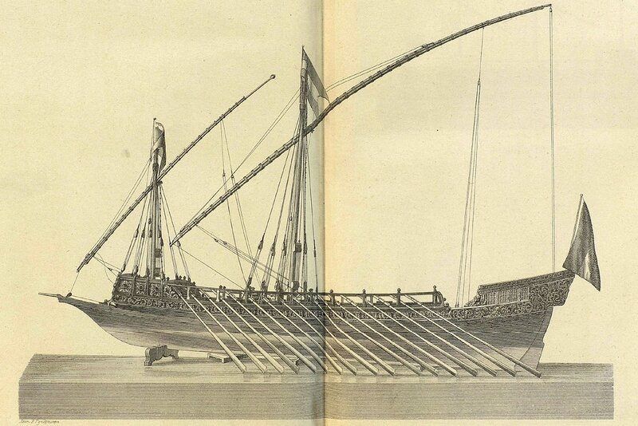
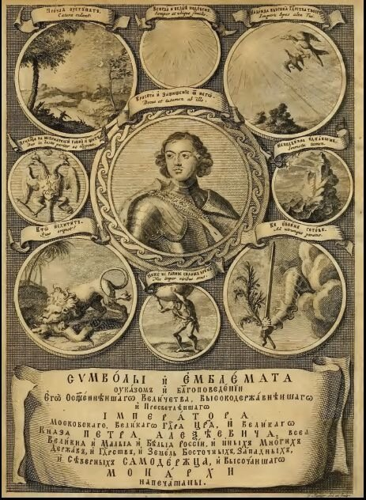
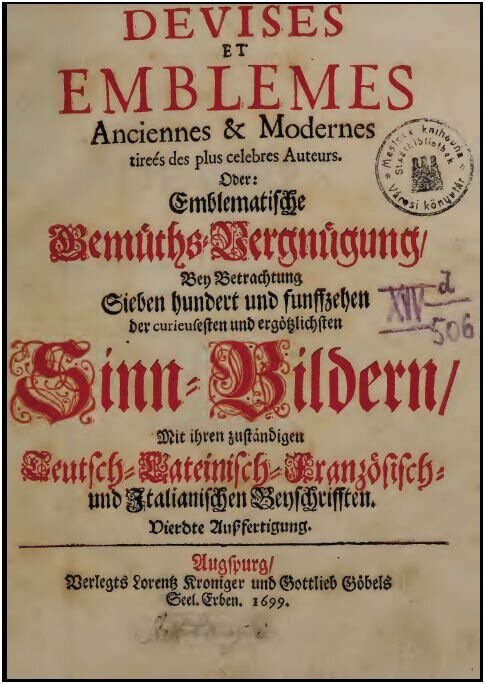

Прежде чем привести список кораблей Азовского флота с их названиями и символикой, сделаем краткий обзор имеющихся в литературе сведений по данному вопросу. Несмотря на обилие материала, фактически большая часть их является пересказом опубликованных много раньше статей на эту тему.
Почти везде приводится «указ» Петра, закрепляющий за монархом монопольное право на утверждение названий военных кораблей. При этом, даже ссылаясь на первую публикацию этого документа у С. Елагина (История русского флота. Период Азовский. СПб., 1864), не всегда учитывают дату указа (25 мая 1699 года) и распространяют его действие на предыдущие годы. Чтобы исключить неверные толкования, приведу текст упомянутого документа в том виде, как он был впервые опубликован:
Грамота къ воеводѣ Полонскому чтобы объявить въ кумпанствахъ о недѣланiи знаменъ до указу и чтобъ гербовъ на корабляхъ назади не рѣзать, 1699 года мая 25.
Отъ Великаго Государя Царя на Воронежъ стольнику нашему и воеводѣ Дмитрiю Васильевичу Полонскому. Какъ къ тебѣ сiя наша В. Г. грамота придетъ и тыбъ всѣхъ кумпанствъ присланнымъ людямь, которые присланы къ корабельному строенiю, нашъ В. Г. указъ сказалъ чтобъ они на корабли знаменъ до нашего В. Г. указу недѣлали, и на корабляхъ гербовъ назади, въ коихъ мѣстахъ гербы бываютъ, неписали бъ и не рѣзали, только бѣ круги которые бываютъ около гербовъ, что надобно письмо или гербы, готовили, для того какимъ гербамъ на которыхъ корабляхъ быть и о томъ имъ нашъ В. Г. указъ впредь присланъ будетъ, и о томъ тѣхъ всѣхъ кумпанствъ у присланныхъ людей велеть взять сказки за руками что имъ тотъ нашъ В. Г. указъ вѣдомъ, да о томъ къ намъ къ В. Г. къ Москвѣ писалъ, и тѣ кумпанскiя сказки за руками прислалъ и велѣлъ подать въ володимерскомъ судномъ приказѣ окольничему нашему Александру Петровичу Протасьеву, съ товарищи.
Второй общий вопрос, который освещается практически во всех публикациях, – использование Петром изданной в 1705 году в Амстердаме книги "Символы и эмблематы", содержащей 840 рисунков с девизами и краткими аннотациями, разъяснявшими систему символико-аллегорических элементов, для выбора названий спускаемых на воду кораблей. При этом не учитывается год издания книги и распространяется ее действие на корабли, построенные ранее этой даты. Даже в таком серьезном (по замыслу) издании, как «История отечественного судостроения в 5 томах», том I (1994), после ссылки на указанную книгу (1705 года!), утверждается, что в соответствии с ней «первая галера «морского каравана» (в Азов. g_g) получила имя «Принципиум» , что в переводе с латыни означало «начало», т.е. этим названием Петр хотел показать начало регулярного военного кораблестроения в России.». Не учитывают авторы своего же замечания в этой же книге, что галера «Принципиум» была спущена на воду 3 апреля 1696 года, т.е. за девять лет до выхода книги.
Третье, о чем хотелось бы сказать, касается самих названий галер. Имена первых кораблей Азовского флота до нас дошли только из неофициальной переписки и из дневника П. Гордона. «Дневник бывшего в Российской службе Генерала Патрика Гордона» написан на староанглийском с вкраплениями старошотландского языка, хранится в фондах Российского государственного военно-исторического архива, полностью еще не издан. Из опубликованных материалов мы узнаем название первой флагманской галеры: «2 апреля с церемониею спущены на воду три галеры. Первая Принципиум; две другие назывались Св. Марк и Св. Матвей.» Однако чаще в переписке употреблялось не название Принципиум, а «Его Величества» или «Кумандера».
Тот факт, что имена галерам были даны, подтверждается двумя письмами к Петру (1696 г.):
- от Стрешнева (8 мая): «по письму отъ милости твоей уведомился о корабляхъ, которые на Воронеже спущены на святой неделе и въ которые дни и имена тѣмъ кораблямъ и о томъ увѣдалъ отъ адмирала».
- от Головина: (14 мая): «а что въ томъ письмѣ изволилъ ты писать ко мнѣ о галерахъ и изволилъ прислать особое письмо, сколько ихъ и какіе имъ имена и каковы мѣрою и что на нихъ людей и пушекъ. и по тому письму Государямъ и генералисимусамъ извѣстно и господамъ, кому надлежадо вѣдать, вѣдомо».
Указав выше на несостоятельность версии, согласно которой имена первым российским кораблям давались по вышедей в 1705 г. в Амстердаме книге "Символы и эмблематы", рискнем выдвинуть другую гипотезу.
Полное название книги 1705 года: «Символы и Емблемата указом и благоповедении Его Освященного Величества, Высокодержавнейшего и Пресветлейшего Императора Московского, Государя Царя, и Великого Князя Петра Алексеевича, всея Великия и Малыя и Белыя России, и иных Многих Держав и Государств и Земель Восточных, Западных и Северных самодержца, и Высочайшего монарха напечатаны.» Русское заглавие книги гравировано на фронтисписе работы Иоганна Мулдера. Здесь же помещён портрет Петра I, выполненный с оригинала Готфрида Кнеллера, а вокруг —8 эмблем с подписями.

Автор книги не указан, но не составит труда выяснить, что исходным материалом для нее послужили изданные ранее книги француза Даниэля де ля Фея (Daniel de la Feuille). Удалось установить, в частности, амстердамские издания 1691, 1693 и 1696 гг. и издание 1699 г. (Аугсбург).

Еще большее углубление в тему позволило установить и предшественников де ля Фея - Jacob Cats, Diego de Saavedra Fajardo и Tronus Cupidinis.
Символико-аллегорический подход к названию кораблей, раскрытие символа через девиз было заимствовано Петром из западноевропейских стран во время его первого заграничного путешествия, во время которого он увлекся эмблемами, символами и аллегориями. Скорее всего, источником для него послужили не одна, а несколько книг того времени на данную тему.
Продолжим в следующий раз.